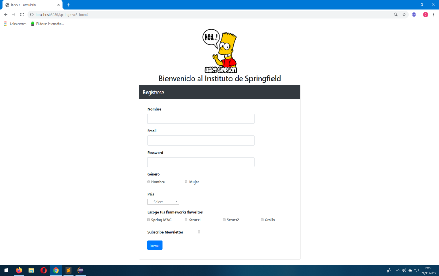

Seguimos con los formularios con Spring y ahora nos toca validar un formulario, o sea, este proyecto disponible en GitHub es una continuación del anterior Formulario con Spring MVC.
Como siempre empezamos con las dependencias necesarias para llevar a cabo el proyecto.
Simplemente hay que añadir una dependencia respecto a las del tutorial anterior.
...
<!-- Hibernate Validator -->
<dependency>
<groupId>org.hibernate</groupId>
<artifactId>hibernate-validator</artifactId>
<version>${hibernate.version}</version>
</dependency>
...
La especificación Bean Validation define un conjunto de anotaciones que proporcionan una colección de restricciones genéricas y básicas y que podemos comprobar en la documentación.
Las clases de configuración son exactamente iguales a las del proyecto anterior por lo que no vamos a extendernos mas.
La misma clase que el anterior proyecto pero con las anotaciones correspondientes para validar los campos.
package com.wanchopi.spring.model;
import javax.validation.constraints.NotNull;
import javax.validation.constraints.Pattern;
import javax.validation.constraints.Size;
import org.hibernate.validator.constraints.Email;
import org.hibernate.validator.constraints.NotEmpty;
/**
* Entity
* @author Wanchopi
*
*/
public class Student {
@NotNull(message = "Campo requerido")
@Size(min = 3, max = 25, message = "entre 3 y 25 caracteres")
private String userName;
@NotEmpty(message = "Campo requerido")
@Email(message = "Introduzca un email válido")
private String email;
@NotNull(message = "Campo requerido")
@Pattern(regexp = "^(?=\\w*\\d)(?=\\w*[A-Z])(?=\\w*[a-z])\\S{4,6}$", message=""
+ "La contraseña debe de tener entre 4 y 8 caracteres, \n"
+ "al menos un dígito, al menos una mayúscula, al menos una minúscula.\n"
+ "No puede contener otros símbolos")
private String password;
@NotNull (message = "Campo requerido")
private String gender;
@NotNull(message = "Campo requerido")
private String country;
private boolean receivePaper;
@NotEmpty(message = "No has seleccionado ningún lenguaje de programación")
private String[] favoriteFrameworks;
/**
* @return the email
*/
public String getEmail() {
return email;
}
/**
* @param email the email to set
*/
public void setEmail(String email) {
this.email = email;
}
/**
* @return the userName
*/
public String getUserName() {
return userName;
}
/**
* @param userName the userName to set
*/
public void setUserName(String userName) {
this.userName = userName;
}
/**
* @return the password
*/
public String getPassword() {
return password;
}
/**
* @param password the password to set
*/
public void setPassword(String password) {
this.password = password;
}
/**
* @return the country
*/
public String getCountry() {
return country;
}
/**
* @param country the country to set
*/
public void setCountry(String country) {
this.country = country;
}
/**
* @return the gender
*/
public String getGender() {
return gender;
}
/**
* @param gender the gender to set
*/
public void setGender(String gender) {
this.gender = gender;
}
/**
* @return the receivePaper
*/
public boolean isReceivePaper() {
return receivePaper;
}
/**
* @param receivePaper the receivePaper to set
*/
public void setReceivePaper(boolean receivePaper) {
this.receivePaper = receivePaper;
}
/**
* @return the favoriteFrameworks
*/
public String[] getFavoriteFrameworks() {
return favoriteFrameworks;
}
/**
* @param favoriteFrameworks the favoriteFrameworks to set
*/
public void setFavoriteFrameworks(String[] favoriteFrameworks) {
this.favoriteFrameworks = favoriteFrameworks;
}
}
Y aquí un enlace a la página oficial Hibernate Validator
package com.wanchopi.spring.controller;
import javax.validation.Valid;
import org.apache.commons.logging.Log;
import org.apache.commons.logging.LogFactory;
import org.springframework.beans.factory.annotation.Value;
import org.springframework.beans.propertyeditors.StringTrimmerEditor;
import org.springframework.stereotype.Controller;
import org.springframework.validation.BindingResult;
import org.springframework.web.bind.WebDataBinder;
import org.springframework.web.bind.annotation.GetMapping;
import org.springframework.web.bind.annotation.InitBinder;
import org.springframework.web.bind.annotation.ModelAttribute;
import org.springframework.web.bind.annotation.PostMapping;
import org.springframework.web.servlet.ModelAndView;
import com.wanchopi.spring.model.Student;
/**
* Spring MVC Controller
* @author Wanchopi
*
*/
@Controller
public class StudentController {
protected final Log logger = LogFactory.getLog(getClass());
@Value("${countries}")
private String countries; // load field countries of properties
@Value("${frameworks}")
private String frameworks; // load field frameworks of properties
@ModelAttribute("countryList")
public String[] loadCountries() {
String[] items = this.countries.split(","); // converts a comma-separated string into an array
return items;
}
@ModelAttribute("frameworkList")
public String[] loadFrameworks() {
String[] items = this.frameworks.split(","); // convers a comma-separated string into an array
return items;
}
@InitBinder
public void initBinder(WebDataBinder dataBinder) {
StringTrimmerEditor stringTrimmerEditor = new StringTrimmerEditor(true);
dataBinder.registerCustomEditor(String.class, stringTrimmerEditor);
}
@GetMapping("/")
public ModelAndView student() {
logger.info("Returning form view");
Student student = new Student();
ModelAndView mav = new ModelAndView("index", "student", student);
return mav;
}
@PostMapping("/save")
public String saveForm(@Valid @ModelAttribute("student") Student student,
BindingResult theBindingResult) {
if (theBindingResult.hasErrors()) {
return "index";
}
else {
return "success";
}
}
}
El método saveForm acepta dos argumentos: (traducción de la página oficial de SPring)
Os remito a la página oficial de Spring para mas información.
El index.jsp es igual que el del anterior proyecto al que le añadimos una etiqueta <form:errors /> mas por campo que queramos validar para recoger los errores. Por ejemplo el campo nombre quedaría así:
<!-- user name -->
<div class="form-group">
<label for="username" class="col-md-3 control-label font-weight-bold">Nombre</label>
<div class="col-md-9">
<form:input path="userName" type="text" cssClass="form-control" />
<form:errors path="userName" cssClass="errors" />
</div>
</div>
Entonces, en el index presentamos el formulario
Que si no cubrimos correctamente, el controlador nos devuelve al index con los mensajes de error oportunos.
La vista success.jsp si que no cambia nada respecto a la del anterior proyecto.